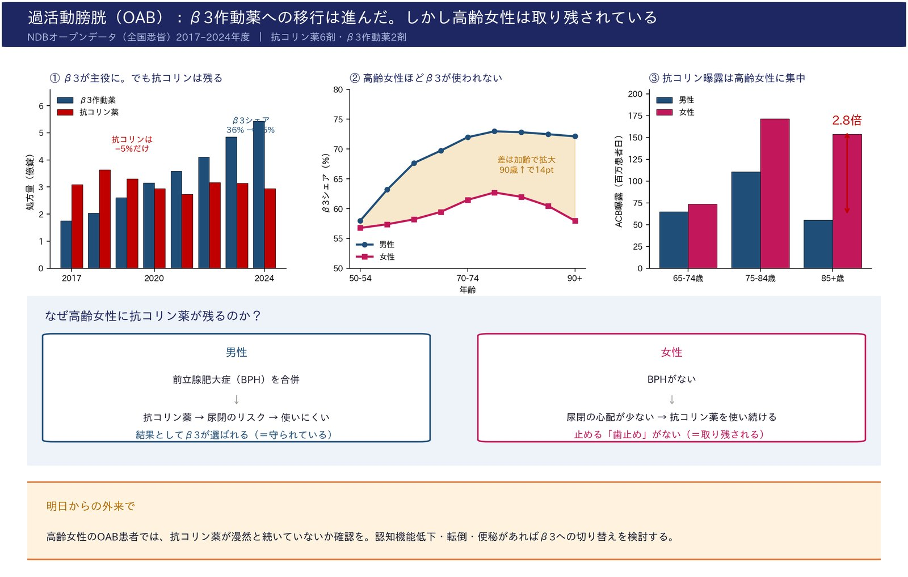

OABの薬は、認知機能低下や転倒のリスクがある抗コリン薬から、リスクの少ないβ3作動薬へ移行しつつあります。β3のシェアは36%から65%に上昇しました。ところが、抗コリン薬の量は5%しか減っていません。市場が1.7倍に膨らみ、シェアが下がって見えただけです。さらに大きな性差がありました。85歳以上でβ3を使う割合は男性72%、女性59%。抗コリン薬の曝露量（ACB）は女性が男性の2.8倍です。男性は前立腺肥大症のため抗コリン薬が尿閉リスクとなり自然に避けられますが、女性にはその「歯止め」がありません。最も認知機能を守りたい高齢女性が、最も抗コリン薬にさらされています。外来で高齢女性のOAB患者を診たら、その抗コリン薬が本当に必要か、立ち止まって考えてみてください。（※2021〜2022年度は後発医薬品の供給不足の影響を受けた期間であり、経年変化の評価には2018年度と2024年度を用いています。）